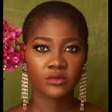
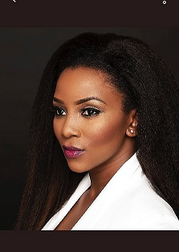

Mercy Johnson-Okojie hails from Okene in Kogi State. Born in Lagos to a former naval officer, Mr Daniel Johnson and Mrs Elizabeth Johnson, she is the fourth child in a family of seven.She started her primary education in Calabar. Her father, being a naval officer, was later transferred to Lagos State where she continued her education at a Nigerian Navy Primary School. She went to a Rivers State Secondary School for her secondary education in addition to the Nigerian Navy Secondary School in Port Harcourt, Rivers State.
Right after her secondary education, she auditioned for a role in The Maid and subsequently acted in other movies such as Hustlers, Baby Oku in America, War in the Palace.In 2009, she won an award for Best Supporting Actress at the 2009 African Movie Award ceremony, and Best Actress award at the 2013 Africa Magic Viewers Choice Awards for her role in the comedy movie Dumebi the Dirty Girl.In December 2011, she was listed as Google's most searched Nigerian celebrity, a position she also held in 2012.She is the senior special assistant(SSA) to the kogi state governor on entertainment, arts and culture.This post took effect from 1 April 2017.

Genevieve Nnaji hails from Okene in Kogi State.Born in Lagos to a former naval officer, Mr Daniel Johnson and Mrs Elizabeth Johnson, she is the fourth child in a family of seven.She started her primary education in Calabar. Her father, being a naval officer, was later transferred to Lagos State where she continued her education at a Nigerian Navy Primary School.She went to a Rivers State Secondary School for her secondary education in addition to the Nigerian Navy Secondary School in Port Harcourt, Rivers State.
Right after her secondary education, she auditioned for a role in The Maid and subsequently acted in other movies such as Hustlers, Baby Oku in America, War in the Palace.In 2009, she won an award for Best Supporting Actress at the 2009 African Movie Award ceremony, and Best Actress award at the 2013 Africa Magic Viewers Choice Awards for her role in the comedy movie Dumebi the Dirty Girl.In December 2011, she was listed as Google's most searched Nigerian celebrity, a position she also held in 2012.She is the senior special assistant(SSA) to the kogi state governor on entertainment, arts and culture.This post took effect from 1 April 2017.